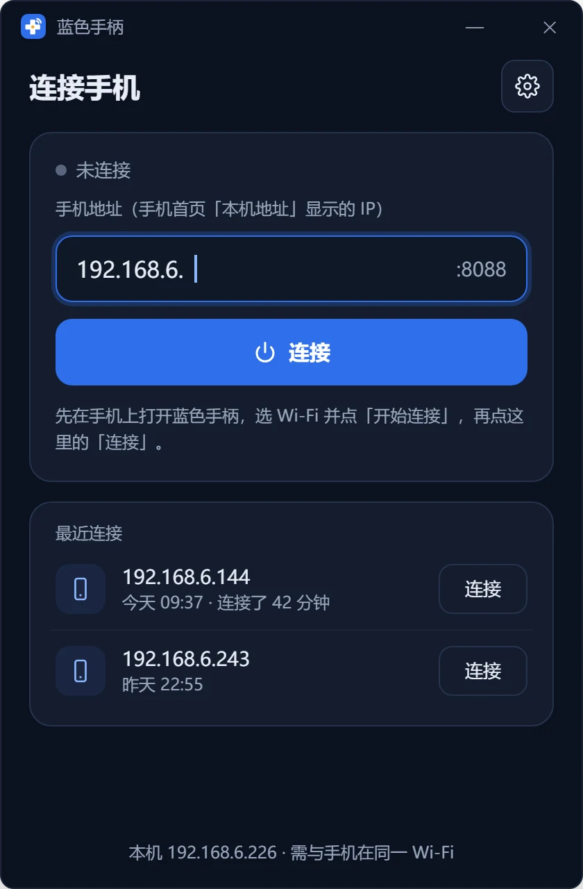
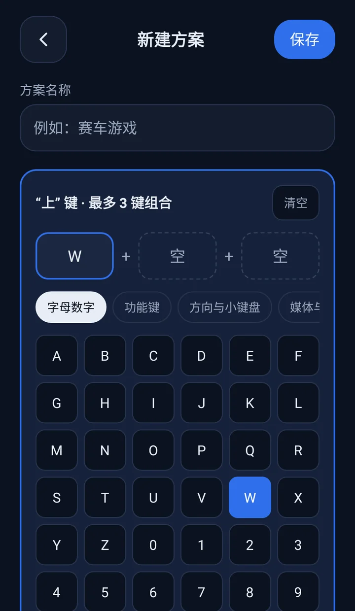

使用手册
蓝色手柄由两部分组成：手机端负责发出按键和文字，电脑端负责在电脑上执行。两边都要安装，连上之后就能用手机控制电脑。
安装
| 手机端 | 电脑端 | |
|---|---|---|
| 系统要求 | Android 4.1 及以上 | Windows 10 / 11（64 位），需要系统自带的 WebView2 |
| 下载 | GitHub Releases 里的 APK | GitHub Releases 里的 bluehandle.exe |
| 安装方式 | 打开 APK 安装。系统提示"未知来源"时，按提示允许 | 不需要安装，双击 exe 运行 |
第一次打开手机端会显示一份简短的引导，讲清楚怎么装电脑端、怎么连接。以后可以在首页的「使用帮助」里再看。
连接电脑
手机首页的连接卡片可以在 Wi‑Fi 和 蓝牙 之间切换。Wi‑Fi 适合家里和办公室；没有网络的场合（比如会议室）用蓝牙。连接成功后手机停在首页，状态变成"已连接"，再选要用的模式。


Wi‑Fi 连接
Wi‑Fi 连接时，是电脑去连手机：手机先等待，电脑再根据手机的地址发起连接。
- 手机和电脑连到同一个 Wi‑Fi（同一个路由器下即可）。
- 手机首页选「Wi‑Fi」，点「开始连接」。卡片下方会显示本机地址，例如
192.168.1.23:8088。 - 电脑端在「Wi‑Fi」标签下输入这个地址（端口是默认的 8088 时可以不填），点「连接」。
- 两边都显示"已连接"就成功了。
电脑端会记住最近连接过的手机，下次直接在"最近连接"里点「连接」。
蓝牙连接
蓝牙连接前，手机和电脑要先在系统里配对，只需要配对一次。
- 配对：手机打开「设置 → 蓝牙」，保持在这个页面（手机才能被搜到）。电脑打开「设置 → 蓝牙和其他设备 → 添加设备 → 蓝牙」，选你的手机，两边确认配对码。
- 手机首页选「蓝牙」，点「开始连接」。Android 12 及以上第一次使用时会请求"附近设备"权限，请允许。
- 电脑端切到「蓝牙」标签，列表里列出已配对的设备，手机排在最前面。点手机后面的「连接」。
列表里没有你的手机，说明还没配对，可以点「打开电脑蓝牙设置」去配对；配对后点「刷新」。蓝牙连接最长等 20 秒，手机需要在电脑附近（10 米以内）。
游戏手柄
首页点「游戏手柄」，选一套键位方案后进入横屏手柄。左边是方向键，右边是 A / B / X / Y，中间是 Select 和 Start，每个按钮对应电脑上的一个键（或组合键）。

- 多指操作：可以多根手指同时按；按住一个键滑出按钮范围时，这个键会松开，不会卡住。
- 顶栏：左边返回首页（不会断开连接），点方案名可以换方案；右边可以开关重力感应、按键震动，以及断开连接。
- 重力感应：开启后左右倾斜手机就会发送左右方向键，适合赛车游戏。灵敏度在设置里调。
键位方案
内置的"默认键位"如下，适合大多数模拟器：
| 手柄按钮 | 电脑按键 | 手柄按钮 | 电脑按键 |
|---|---|---|---|
| 上 / 下 / 左 / 右 | W S A D | A / B | J K |
| X / Y | U I | Select / Start | 1 5 |
可以给不同的游戏各建一套方案。在键位方案页点「新建方案」，或点已有方案右边的编辑按钮修改；长按方案可以删除。上次使用的方案会自动选中。
自定义按键

- 在下方的按钮宫格里点要修改的手柄按钮。
- 上方会显示这个按钮当前对应的键，最多可以设 3 个键，组成组合键（例如 Ctrl+Shift+Z）。
- 从分类键盘（字母数字、功能键、方向键、媒体）里点选按键，填进空位。
- 改完所有按钮后保存。
电脑遥控器
竖屏单手使用，外观像电视遥控器，控制的是电脑。把电脑接到电视或投影上时最好用。

| 按钮 | 电脑上的效果 |
|---|---|
| 锁屏 | 锁定电脑（由电脑端调用系统锁屏，等同 Win+L） |
| 切换窗口 | Alt+Tab |
| 静音 | 系统静音（媒体键） |
| 方向盘 / OK | 方向键 / Enter |
| 返回 | Esc |
| 桌面 | Win+D，显示桌面 |
| 菜单 | 右键菜单键 |
| 音量 + / − | 系统音量加减 |
| 翻页 ▲ / ▼ | PgUp / PgDn |
| 上一曲 / 播放暂停 / 下一曲 | 媒体键，控制正在播放的音乐和视频 |
方向键、OK、音量和翻页支持按住：手指不松开，电脑上这个键就一直按着。底部的「语音输入」和「数字键」会打开对应的页面。
数字键
0–9、小数点、退格和回车。每按一次就立即发送到电脑，屏幕上方只回显最近的输入，方便确认。适合输入集数、页码和验证码。
语音输入
在遥控器里点「语音输入」打开。说出的话会作为文字，输入到电脑上当前光标所在的位置。

两种说法
- 按住说话（推荐）：按住麦克风开始听，说完松手，文字直接发到电脑。说的过程中停顿也没关系，手指不松就一直在听。按住时手指往上滑，松手就取消这次输入。
- 点一下：点一下麦克风开始听，停顿后自动结束。识别结果留在上方的文本框里，可以修改，确认后点「发送到电脑」。
设置里的"按住说话，松手直接发送"关掉后，按住说话松手时也会先显示结果，确认后再发送。
其他选项
- 识别语言：点右上角在普通话、粤语、English 之间切换。
- 发送后："只输入文字"，或"输入并回车"（适合搜索框，说完就搜）。
- 直接打字：文本框也可以用手机键盘输入，同样点「发送到电脑」。
识别引擎
默认用手机自带的语音识别服务（"内置识别"），首次使用需要允许录音权限。手机上没有可用的识别服务时，会自动改用"系统输入法"：这时页面上是文本框，点输入法键盘上的麦克风说话即可。可以在设置里手动切换。
PPT 演示
竖屏单手使用，按钮大，不用看屏幕也能按准。

- 翻页：底部大按钮是下一页，上面是上一页（PgDn / PgUp）。
- 音量键翻页：音量加上一页，音量减下一页，默认开启。只在这个页面打开、屏幕亮着时有效。
- 放映控制：从当前页放映（Shift+F5）、黑屏（B，再按一次恢复）、退出放映（Esc）。
- 计时：显示已演讲的时间和距目标时长还剩多少，可以暂停、清零。目标时长在设置里调（5–120 分钟，默认 20 分钟）。剩余 2 分钟时手机长震一次提醒，不发出声音。
- 开启"按键震动"后，每次翻页手机会轻震一下。
电脑端

已连接页面
- 统计：本次收到的按键数、文字段数，以及心跳。手机每秒发一次心跳，超过 3 秒没收到会标红。
- 最近收到：按时间列出每个按键、组合键、按住的时长和收到的文字。长文字点一下可以展开看全文。
- 暂停接收：连接保持，但手机上的操作暂时不在电脑上生效。暂停时会松开所有还按着的键。
- 断开：主动断开，不会自动重连。
托盘
关闭窗口后程序缩到屏幕右下角的托盘里继续运行。托盘图标右下角的圆点：绿色是已连接，橙色是已暂停。右键托盘图标可以打开主窗口、连接上次的手机、暂停 / 继续接收、断开、打开设置和退出。
设置
| 设置项 | 说明 |
|---|---|
| 端口 | Wi‑Fi 连接用的端口，需与手机设置一致，默认 8088 |
| 启动时自动连接上次的手机 | 手机还没在等待时，每 3 秒重试一次 |
| 意外断开后自动重连 | 网络抖动、手机短暂离开后自动重试；手机主动断开时不重连 |
| 开机自动启动 | 开机后只在托盘显示 |
| 关闭窗口时缩到托盘 | 关掉后，关闭窗口就是退出程序 |
| 最近收到里显示文字内容 | 关闭后只显示字数，适合别人能看到屏幕的场合 |
手机端设置
首页右上角的齿轮进入设置。
| 分组 | 设置项 | 说明 |
|---|---|---|
| 外观 | 主题 | 跟随系统（默认）/ 浅色 / 深色。Android 10 以下没有系统深色模式，跟随系统时显示浅色 |
| 连接 | 默认连接方式 | 首页默认选中 Wi‑Fi 还是蓝牙 |
| Wi‑Fi 端口 | 默认 8088，改了要和电脑端一致 | |
| 系统网络设置 | 打开系统的 Wi‑Fi 与蓝牙设置页 | |
| 反馈 | 按键震动 | 按下任意按键时短震一下，默认关 |
| 屏幕常亮 | 连接期间不自动熄屏，默认开 | |
| 游戏手柄 | 重力感应 / 灵敏度 | 左右倾斜手机发送方向键 |
| PPT 演示 | 音量键翻页 / 目标演讲时长 | 默认开 / 20 分钟 |
| 剩余 2 分钟时提醒 | 长震动一次，默认开 | |
| 语音输入 | 识别语言 / 识别引擎 | 见语音输入 |
| 按住说话，松手直接发送 | 默认开 | |
| 发送到电脑后默认 | 只输入文字 / 输入并回车 | |
| 其他 | 键位方案管理、使用帮助、下载电脑端、关于 |
常见问题
电脑端提示"连接超时"
- 确认手机和电脑连着同一个 Wi‑Fi。电脑插网线、手机连 Wi‑Fi 也可以，只要在同一个路由器下。
- 路由器是否开了"访客网络"或"AP 隔离"，有的话换主网络或关掉。
- 电脑上的代理、VPN 或安全软件可能拦截局域网连接，可以先关掉试试。
- 地址要和手机首页显示的一致。手机的地址可能会变，以首页当前显示的为准。
电脑端提示"手机拒绝了连接"
说明电脑找到了手机，但手机没有在等待：手机上点「开始连接」，确认状态是"等待电脑端接入"。也检查一下两边的端口是否一致。
蓝牙列表里没有手机 / 连不上
- 手机要先和电脑在系统里配对，配对后在电脑端点「刷新」。
- 手机首页要选「蓝牙」并点「开始连接」，电脑端才能连上。
- 电脑端提示"电脑的蓝牙不可用"时，在 Windows 设置里打开蓝牙。
连上了，但某个程序里按键没反应
先看电脑端"最近收到"里有没有这个按键：没有，是连接或手机端的问题；有，多半是目标程序以管理员身份运行，见上文电脑端的说明。另外检查电脑端是否处于"暂停接收"。
用着用着断开了
手机熄屏或切到后台时，系统可能暂停应用。保持"屏幕常亮"开启，并尽量让蓝色手柄留在前台。电脑端开着"意外断开后自动重连"时，手机重新点「开始连接」后会自动连回去。
语音输入没反应
- 首次使用内置识别要允许录音权限。拒绝过的话，到系统设置里给蓝色手柄开启麦克风权限。
- 手机没有语音识别服务时，在设置里把识别引擎改成"系统输入法"，用输入法自带的语音输入。
- 文字会输入到电脑当前光标所在的位置，确认电脑上的输入框已经获得焦点。
熄屏后音量键还能翻页吗？
不能，音量键翻页只在 PPT 页面打开、屏幕亮着时有效。演讲时保持"屏幕常亮"开启即可。
想了解手机和电脑之间的通信格式，见 协议说明。发现问题或有建议，欢迎到 GitHub Issues 反馈。